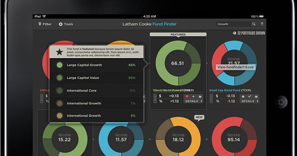
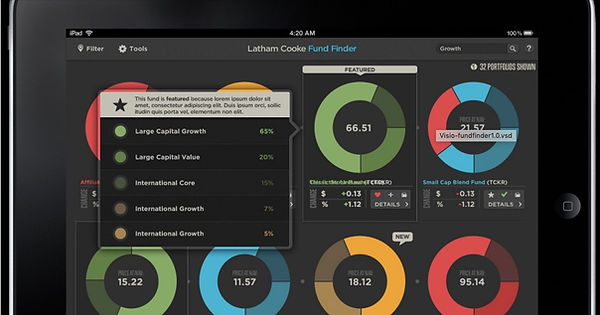

Selected Work
Some of my work.
Fiserv
AI Powered CFO Office
I led a team of programmers and developers in building an AI-powered CFO office, leveraging ChatGPT to streamline financial operations.
The system enabled rapid generation of financial reports, while a chatbot interface allowed users to interact with data conversationally—conducting real-time analysis, querying financial insights, and making informed decisions more efficiently.
You can see some documents samples here.
 

Lord Abbett
Digital Strategy Example
As a UX Team Leader at HNW I was responsible for strategy, design and research on this project.
After two years and about seven thousand pages of documentation we completed a new digital system for our client. It included website redesign, mobile applications and robust pattern libraries.
IBM Bluedot
Mobile App Example
As an Experience Director at IBM Watson, one of the project I completed was to create a support app and a website module for their Bluemix cloud tool.
One of the main challenges was integration with existing IBM systems and anticipation for future uses.
In order to complete the project I have also developed a simplified set of user testing procedures to allow for a frequent and cost effective user research at every step of the project.
You can see some documents samples here.

Pearson
iPad App Example
As a Senior UX Director I was in charge of several modules of Common Core Standards app which was developed in collaboration with Apple Computers.
There were several team working on section of the final product and one of the challenges was to organize consistency of UX design between those team which were all across the country. It definitely helped me to tune up my remote collaboration skills.
COPD
Responsive Website Example
As an Experience Director for Havas was tasked with several marketing projects.
For this particular case, our client, GlaxoSmithKline, ask for help in transitioning an existing website to a responsive format. The objective was to do it quickly, inexpensively, reusing content and design as much as possible. Upon this project successful completion, a responsive system proposed here was officially recommended by the client to all the vendors globally.
You can see some work samples here.
INTEL
Content Strategy and Information Architecture Example
As an Information Architect on this project I was tasked with finding ways of organizing and presenting content in a way that will result in better find-ability and more relevance for the user.
One of the bigger challenges was a large number of user types. Collaborating with Intel's marketing department we identified over 50 different personas, each with unique needs.
TD Ameritrade
Research Example
As an Experience Director for Havas, I was tasked with research and recommendations for improvement to website and mobile app redesign. As one of the steps in this process I did competitive analysis and heuristic evaluation of the existing product which led to educated recommendation for improvements.
You can see some work samples here.
Gerson Lehrman Group
Service Design Example
As a Lead UX and Service Designer for this biggest think tank in the world I had to analyze several workflows and services at the heart of their system and consequently propose improvements to both service and corresponding software. This work included a lot of ethnographic user research as well.
You can see some work samples here.

Corporate Voice
Presentation Example
I helped this small agency to develop a comprehensive brand asset management system. It included online branding guidelines, databases of different brand-related assets, and automation for brand assets creations. On the administrator side we included approval workflows, reporting and user permission and role management.
You can see some work samples here.
The Children's Place
E-Commerce Example
My team was asked to redesign digital presence for The Children's Place and its sub-brands. The Children's Place is a leading specialty retailer of children's clothing and accessories, catering to kids from newborn to age 14. This project was mainly focused on improving user journeys, product find-ability and user retention programs.